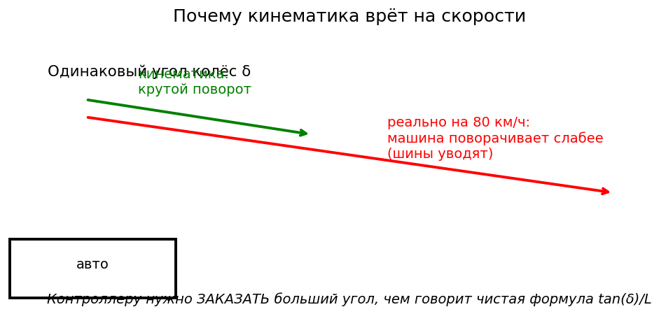
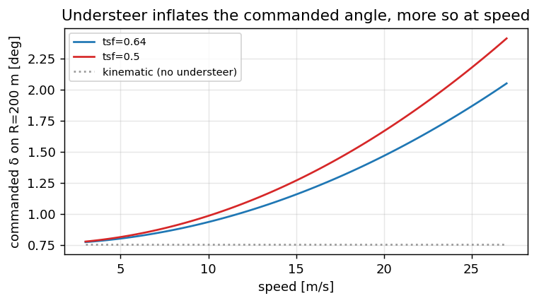
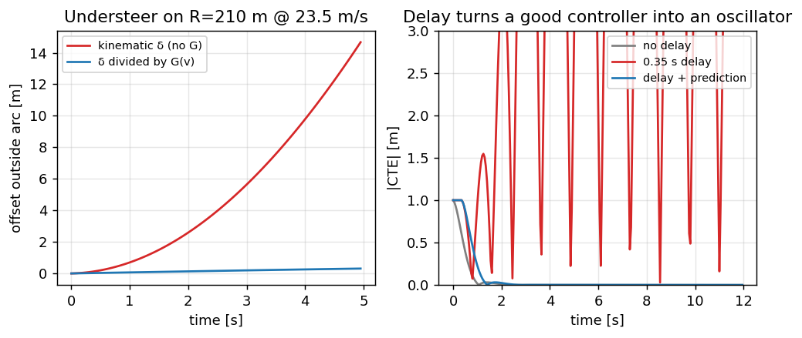

Модель машины (недокрут)#
Кинематика против реальности#
Из главы про велосипедную модель кинематическая кривизна при угле колеса \(\delta\) равна
Если бы машина и вправду ей следовала, скорость рыска подчинялась бы уравнению \(\dot\psi = v\,\kappa_{\mathrm{kin}}\). Определим теперь измеренную кривизну — ту, что видно по датчикам:
На парковочных скоростях \(\kappa_{\mathrm{fact}} \approx \kappa_{\mathrm{kin}}\). На шоссе шины уже проскальзывают: при том же \(\delta\) кривизны получается меньше,

Если упреждающая часть опирается только на \(\kappa_{\mathrm{kin}}\), на дугах она запрашивает слишком малый SWA → снос наружу; а обратная связь вступает поздно, уже после задержки зрения.
Простая формула недокрута#
{kind=link}

Рис. 31 Чтобы удержать тот же радиус, с ростом скорости модель командует всё больший угол — и тем больший, чем меньше фактор жёсткости.#
Однопараметрическая модель, которую применяют в стеках вроде openpilot (и наш tire_stiffness_factor), выглядит так:
или, что то же самое: чтобы получить желаемую \(\kappa_{\mathrm{des}}\), нужно скомандовать угол колеса больше, чем \(\arctan(L\kappa_{\mathrm{des}})\).
Операционально в коде:
Интуиция
В пространстве кривизны шины как бы удлиняют машину: тот же \(\delta\) даёт меньшую \(\kappa\). Модель машины завышает команду, чтобы воображаемый велосипед совпал с настоящим Golf.
Сначала прочувствуйте оба дефекта на игрушке#
Прежде чем измерять настоящую машину, внесите в игрушечный объект те два дефекта, которым посвящена эта
глава: колёса больше не едут туда, куда смотрят, а команды приходят с задержкой 0.35 с. Три опорные точки
\(G(v)\) взяты из замеров этой машины (таблица ниже), а задержка — это fp_steer_delay_s:
import math
from collections import deque
import numpy as np
DT, L = 0.05, 2.636
MAX_STEER = math.radians(25.0)
def G_of_v(v):
"""Achieved / kinematic curvature, measured on the Golf at 8, 13.5, 23.5 m/s."""
return float(np.interp(v, [8.0, 13.5, 23.5], [0.97, 0.80, 0.54]))
def make_plant(v, delay_s=0.0):
"""Returns step(delta_cmd) -> (x, y, psi). The queue is the delay."""
state = {"x": 0.0, "y": 0.0, "psi": 0.0}
q = deque([0.0] * max(0, round(delay_s / DT)))
def step(delta_cmd):
q.append(float(np.clip(delta_cmd, -MAX_STEER, MAX_STEER)))
delta = q.popleft()
state["x"] += v * math.cos(state["psi"]) * DT
state["y"] += v * math.sin(state["psi"]) * DT
state["psi"] += v * G_of_v(v) * math.tan(delta) / L * DT
return state["x"], state["y"], state["psi"]
return step, q
Дефект 1 — дуга, которая убегает. Подайте упреждение на дугу R = 210 м при 23.5 м/с ровно так, как велит велосипедная модель, и посмотрите, что выйдет:
KAPPA = 1.0 / 210.0
V = 23.5
def drift_on_arc(compensate, t_end=5.0):
"""Signed offset from the arc after t_end seconds (positive = outside)."""
step, _ = make_plant(V)
delta = math.atan(L * KAPPA / (G_of_v(V) if compensate else 1.0))
for _ in range(int(t_end / DT)):
x, y, psi = step(delta)
return math.hypot(x, y - 1.0 / KAPPA) - 1.0 / KAPPA
raw = drift_on_arc(False)
fixed = drift_on_arc(True)
print(f"kinematic feed-forward: {raw:+.1f} m outside the arc after 5 s")
print(f"divided by G(v): {fixed:+.2f} m (open loop — the residue is Euler drift)")
assert raw > 5.0, "uncompensated understeer must leave the arc by metres"
assert abs(fixed) < 0.5, "acceptance: dividing the curvature by G(v) holds the arc"
Одно деление исправляет всё — если вы знаете \(G\). Остаток главы — про то, как его узнать: из физической модели, а не по таблице, потому что таблица, снятая на сухом асфальте, врёт на мокром.
Дефект 2 — задержка, превращающая хороший регулятор в генератор колебаний. Прямая дорога, регулятор «курс + смещение», который держал 7 см на синусоиде, — и добавим 0.35 с задержки:
def drive_straight(delay_s, predict, kp=2.0, t_end=12.0, v=23.5):
"""Straight road, start 1 m off centre; returns (settled |CTE| p95, worst |CTE|)."""
sx, sy, spsi = 0.0, 1.0, 0.0
queue = deque([0.0] * max(0, round(delay_s / DT)))
ctes = []
for _ in range(int(t_end / DT)):
ex, ey, epsi = sx, sy, spsi
if predict:
# dead-reckon through every command still in flight
for d in queue:
ex += v * math.cos(epsi) * DT
ey += v * math.sin(epsi) * DT
epsi += v * G_of_v(v) * math.tan(d) / L * DT
delta_cmd = float(np.clip(-epsi - math.atan2(kp * ey, v), -MAX_STEER, MAX_STEER))
queue.append(delta_cmd)
d = queue.popleft()
sx += v * math.cos(spsi) * DT
sy += v * math.sin(spsi) * DT
spsi += v * G_of_v(v) * math.tan(d) / L * DT
ctes.append(abs(sy))
ctes = np.array(ctes)
return float(np.percentile(ctes[len(ctes) // 2:], 95)), float(ctes.max())
p95_no_delay, _ = drive_straight(0.0, predict=False)
p95_delayed, worst = drive_straight(0.35, predict=False)
p95_predicted, _ = drive_straight(0.35, predict=True)
print(f"no delay: settled p95 {p95_no_delay:.3f} m")
print(f"0.35 s delay: settled p95 {p95_delayed:.3f} m, worst {worst:.2f} m")
print(f"delay + prediction: settled p95 {p95_predicted:.3f} m")
assert p95_no_delay < 0.05
assert p95_delayed > 1.0, "the same gains with 0.35 s of delay must oscillate out of the lane"
assert p95_predicted < 0.05, "acceptance: predicting through the in-flight commands restores the loop"
{kind=link}

Рис. 32 Слева: нескомпенсированный недокрут выносит из дуги, а деление кривизны на G(v) её удерживает. Справа: 0.35 с задержки раскачивают контур, а досчёт сквозь команды в полёте возвращает его в норму.#
Лекарство — не меньший коэффициент (попробуйте: раскачка спадёт, но вместе с ней умрёт и отклик). Лекарство
в другом: управлять тем состоянием, к которому команда придёт, а не тем, которое вы измерили сейчас, —
досчитать вперёд через каждую команду в полёте и только потом принимать решение. Боевой
lagAdjustedCurvature — это ровно тот же цикл, но в пространстве кривизны
(MPC и fp, fp-5).
Рецепт измерения (по бегу)#
На кадрах, где рулит водитель (или при любом известном SWA):
\(\delta = \mathrm{SWA} / (\mathrm{steer\_sign}\cdot\mathrm{steer\_ratio})\).
\(\kappa_{\mathrm{kin}} = \tan\delta / L\).
\(\kappa_{\mathrm{fact}} = \dot\psi / v\) (нужно, чтобы \(v\) не была крошечной).
Разбить по диапазонам \(v\), сообщить медианное отношение \(\kappa_{\mathrm{fact}}/\kappa_{\mathrm{kin}}\).
Опорная таблица с нашего Golf:
\(v\), м/с |
\(\kappa_{\mathrm{fact}}/\kappa_{\mathrm{kin}}\) |
|---|---|
6–9 |
0.97 |
12–15 |
0.80 |
21–26 |
0.54 |
import math
import numpy as np
L = 2.636
STEER_RATIO = 15.7
STEER_SIGN = -1
def delta_from_swa_deg(swa_deg: float) -> float:
return math.radians(swa_deg / (STEER_SIGN * STEER_RATIO))
def ratio_kin_vs_fact(swa_deg, yaw_rate_rad_s, v_mps):
"""Return kappa_fact / kappa_kin (NaN if unstable)."""
if abs(v_mps) < 1.0:
return float("nan")
delta = delta_from_swa_deg(swa_deg)
k_kin = math.tan(delta) / L
k_fact = yaw_rate_rad_s / v_mps
if abs(k_kin) < 1e-6:
return float("nan")
return k_fact / k_kin
# At 22 m/s the measured ratio on this car is 0.54 — not a guess, see the table below.
v = 22.0
swa = -60.0 # deg on CAN
delta = delta_from_swa_deg(swa)
k_kin = math.tan(delta) / L
k_fact = 0.54 * k_kin
yaw = k_fact * v
print(f"delta={math.degrees(delta):.2f} deg, k_kin={k_kin:.4f}, "
f"ratio={ratio_kin_vs_fact(swa, yaw, v):.2f}")
Сколько же дополнительного SWA нужно упреждающей части? Чтобы вернуть ту \(\kappa_{\mathrm{fact}}\), которую кинематика обещала на малой скорости, при 22 м/с команду пришлось бы умножить на \(1/0.54 \approx 1.85\). Но относитесь к этому числу без фанатизма: столько просит наивное обращение формулы, а настоящая модель машины распределяет поправку по скорости плавно, а не сводит всё к одному множителю. Зазор между этими 1.85 и теми 3–9 %, на которые поставляемый параметр реально меняет команду, и есть предмет остальной части главы.
k_des = 0.02 # 1/m, mild arc
delta_kin = math.atan(L * k_des)
# crude high-speed correction: inflate the kappa request by the measured shortfall
delta_vm = math.atan(L * k_des / 0.54)
print(f"|SWA| kin={abs(math.degrees(delta_kin)*STEER_RATIO):.1f} deg, "
f"VM~{abs(math.degrees(delta_vm)*STEER_RATIO):.1f} deg")
Ручки проекта#
C++
vehicle_model.h, Pythonscripts/core/vehicle_model.pyvehicle.lat_use_vehicle_model = truetire_stiffness_factor— поставляется значение 0.64 (дефолт в коде, оверрайда в конфиге нет); ему посвящён остаток главы — потому что путь к этому числу полезнее самого числа.
Калибровка одного коэффициента и обнаружение, что одним он быть не может#
Обычно курс на этом и заканчивается: есть формула с одним свободным параметром, вы измеряете отношение по бегу и решаете уравнение относительно параметра. Мы так и поступили — и упёрлись в противоречие, на разрешение которого ушло два заезда и третий датчик. Само это противоречие и есть главный урок.
Противоречие#
Два независимых источника расходились даже в направлении поправки:
источник |
утверждает |
что следует |
|---|---|---|
наш замер по бегу |
\(\kappa_{\text{fact}}/\kappa_{\text{kin}} = 0.54\) при 22 м/с |
недокрут сильнее, чем предполагают наши поставляемые 0.64 → понижать коэффициент |
|
|
недокрут слабее → повышать, причём вдвое |
Оба правы быть не могут, но и отбросить нельзя ни один: их оценщик часами работал на наших дорогах с крошечным разбросом, а наш замер — это прямая арифметика по нашим же логам.
Как это разрешилось: найти третий датчик#
Под подозрение попал вход, общий для обоих расчётов и не проверяемый ни одним из них, — скорость рыска. К нам она приходит с датчика ESP машины по CAN. Будь он неверно отмасштабирован, наши 0.54 были бы искажены ровно на тот же масштаб — и спор бы разрешился.
Значит, нужно сравнить его с двумя другими источниками, измеряющими ту же физическую величину.
# Three sensors, one quantity. Ratios measured on run 2026_08_04_21_00_18.
PAIRS = {"phone gyro / ESP": 1.017, "camera odometry / ESP": 0.849, "camera odometry / gyro": 0.788}
for name, ratio in PAIRS.items():
print(f"{name:>24}: {ratio:.3f}")
print("\nTwo physically independent sensors — a MEMS gyro and a wheel-based ESP unit — agree to 1.7 %,")
print("with no dependence on speed. The camera is the outlier against both, consistently, and by")
print("roughly the amount its own metric scale is off (0.888). So the ESP yaw rate is sound, and the")
print("0.54 measurement stands.")
Это закрыло вопрос единственным возможным способом: не спором о том, чей оценщик лучше, а добавлением
измерения, которое делает один из входов проверяемым. Пока этого не было сделано,
tire_stiffness_factor держали замороженным — намеренно, потому что двигать коэффициент, пока его
собственный вход под подозрением, — значит получить число, подходящее ровно одному заезду и больше ничему.
Что правка дала на самом деле#
С проверенным входом коэффициент сдвинулся с 0.64 до 0.50, а следующий заезд замерили на той же дороге:
до (0.64) |
после (0.50) |
|
|---|---|---|
левая дуга, итоговое смещение |
+0.30 м |
+0.23 м |
левая дуга, ошибка слежения |
+0.29 м |
+0.21 м |
def understeer_command(kappa, v_ms, stiffness_factor, L=2.636, ratio=15.7):
"""Feedforward with the understeer term, in steering-wheel degrees."""
K = 0.0015 / max(stiffness_factor, 1e-3)
return math.degrees(math.atan(kappa * L) * (1.0 + K * v_ms * v_ms)) * ratio
print(f"{'radius':>8} {'speed':>7} {'tsf 0.64':>10} {'tsf 0.50':>10} {'change':>8}")
for radius, v in ((231.0, 13.6), (150.0, 13.8), (134.0, 11.8), (123.0, 13.8)):
a = understeer_command(1.0 / radius, v, 0.64)
b = understeer_command(1.0 / radius, v, 0.50)
print(f"{radius:>6.0f} m {v:>5.1f} m/s {a:>9.1f}° {b:>9.1f}° {100 * (b / a - 1):>+7.1f}%")
Обратите внимание на величину поправки: угол руля вырос всего на 3–9 %. Это тонкая подстройка, а не рычаг, — и она убрала четверть ошибки слежения. Отношение эффекта к вмешательству отличное, но это же и тревожный знак: если 3 % изменения команды сдвигают результат на 25 %, значит, контур работает у предела.
Почему это не может закончиться константой#
Всё упирается в то, что само отношение непостоянно:
скорость |
измеренное отношение |
|---|---|
6–9 м/с |
0.97 |
12–15 м/с |
0.80 |
21–26 м/с |
0.54 |
Один tire_stiffness_factor подходит лишь одной строке таблицы. Настроите его под город — шоссе будет
запрашивать слишком мало; настроите под шоссе — городские дуги начнёт срезать. И 0.50 по замерам верен на
городских дугах, но в реплее одну из городских дуг он даже ухудшил (−0.44 → −0.52 м); такое расхождение
и возникает, когда одному параметру приходится тянуть сразу две работы.
Ответ по существу — перестать подгонять константу и оценивать параметры непрерывно, чтобы зависимость от
\(v^2\) жила в модели наблюдения, а не была зашита в одно число. Именно так работает paramsd у upstream —
фильтр из девяти состояний по жёсткости, передаточному отношению, двум смещениям руля и уклону дороги. В
нашем проекте этот порт есть, измерен и поставляется отключённым: Локализация,
шаг 6 — это как раз замер того, почему. Крен дороги (поперечный уклон оставляет ту же поперечную подпись,
что и недокручивающая машина) теперь оценивается (шаг 5), но остаётся вырождение жёсткость↔передаточное,
которое данные не разделяют, — оно-то и держит фичу выключенной.
Задержка конвейера и почему компенсация больше измерения#
Второе, что должна знать упреждающая часть, — что её картина дороги уже устарела. Медианы, измеренные на ночном заезде длиной 28 минут:
звено |
мс |
как измерено |
|---|---|---|
съёмка → выход модели |
54 |
|
выход модели → команда на руль |
21 |
до публикации |
передача CAN пандой |
~10 |
свой таймер 10 мс, не помечается |
до провода |
~89 |
|
команда → угол рейки |
~40 |
отклик EPS, по CAN |
рейка → скорость рыска |
~120 |
динамика машины |
до скорости рыска |
~250 |
fp_steer_delay_s = 0.35 намеренно больше любой из этих сумм, и причину стоит проговорить вслух, потому
что со стороны это похоже на небрежность. Первые три строки — это транспорт, чистое запаздывание, и
упреждение компенсирует его точно. Последние две — это динамика: отклик примерно первого порядка, и если
компенсировать его номинальной постоянной времени, не остаётся запаса на случай, когда отклик окажется
медленнее номинала — на холодной рейке, изношенной шине или неровной дороге. Недокомпенсация уводит в снос,
перекомпенсация раскачивает, а первое контур переносит куда легче второго.
V = 22.0
print(f"{'delay':>8} {'travel at 22 m/s':>18} {'what it covers'}")
for delay, what in ((0.089, "to the wire"), (0.25, "to yaw rate"), (0.35, "shipped lookahead")):
print(f"{delay:>7.3f}s {V * delay:>15.2f} m {what}")
print()
print("The car covers 7.7 m during the shipped lookahead. On a 130 m arc that is 3.4 deg of")
print("heading, which is why the lookahead is a feedforward input and not a tuning nicety.")
Диагностика сноса на дуге
Порядок: (1) модель машины включена; (2) темп зрения и сквозная задержка в норме; (3) и только потом веса CTE и epsi.
Задания#
Запустите синтетический пример
ratio_kin_vs_fact; замените0.54на0.99и посмотрите, как пропадает завышение SWA.По бегу с рулением водителя постройте отношение по диапазонам \(v\) и сравните с таблицей.
Объясните одним предложением, почему укорочение
fp_steer_delay_sдо \(0.23\) всё равно может ухудшить замкнутый контур.
Дальше: Угловой контур